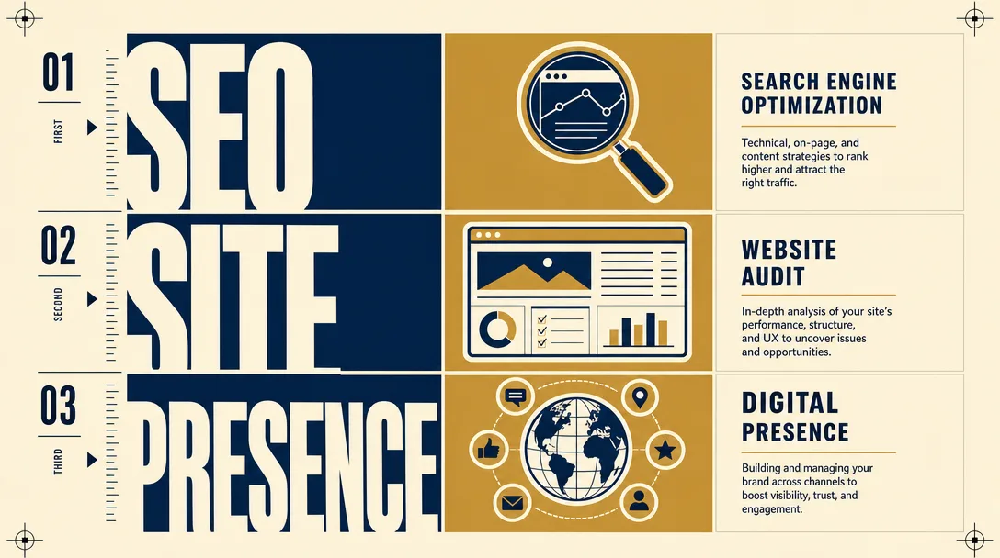

A website audit is a structured review of everything that decides whether your website turns visitors into customers: how fast it loads, whether search engines and AI assistants can read it, how clearly it explains what you sell, and whether the path from landing on a page to sending an enquiry actually works end to end. A real audit produces a prioritised list of specific defects with the evidence attached. A tool report produces a score and a colour.
Key Takeaways
- Most things sold as a “website audit” are single-channel SEO crawls. They measure what is easy to measure automatically, which is why two free tools can score the same site 40 points apart.
- The findings that matter are usually not technical. A site can pass every automated check and still lose every lead because the contact form quietly fails to deliver, or the offer is never stated in the visitor’s own words.
- Judge an audit by whether each finding is evidenced, traceable and ranked. Forty equally weighted problems is not a diagnosis. It hands the hard decision back to you.
What Is a Website Audit?
A website audit answers one question: where is this site losing the people it already attracts?
That framing matters, because it separates two very different exercises. One is a health check: is anything broken, slow or misconfigured. The other is a revenue diagnosis: of everything that could be improved, which specific gap is costing the most money right now. Both are legitimate. Only the second one tells you what to do on Monday morning.
The confusion is understandable. The phrase is used for everything from a 20-second automated scan to a multi-week consulting engagement, and both are advertised with the same two words.
What Does a Website Audit Include?
A thorough audit covers four layers. Weakness in any one of them caps everything downstream.
Technical health. Does every page load and return the right status code? Is the site secure? Is it fast enough on a phone? Google’s published “Good” threshold for Largest Contentful Paint is 2.5 seconds at the 75th percentile of real mobile loads, a bar a surprising number of otherwise well-built sites miss.
Discoverability. Can search engines and AI assistants read the site, and are the pages aimed at words real people type? This is where most audits stop, and it is also where the most common expensive mistake hides: a site that is technically flawless and targets vocabulary nobody searches for.
Messaging and conversion. Within a few seconds, can a stranger tell what you sell, who it is for, and what to do next? Is there one obvious action per page, or five competing ones?
Lead capture. The least glamorous layer and the one that fails most silently. Does the form actually deliver? Does the submission reach your CRM? Is there any way to tell which channel produced the enquiry? A form that looks fine and quietly drops every lead will not show up in a single automated report.

Website Audit vs. SEO Audit vs. Digital Presence Audit
These three terms are used interchangeably and should not be.
An SEO audit examines one channel: how well the site is configured to be found in organic search. Valuable, and narrow by design.
A website audit covers the site itself across all four layers above, including the conversion and capture parts an SEO tool cannot evaluate.
A digital presence audit goes wider still, taking in everything outside the site that shapes whether someone trusts you: your Google Business Profile, reviews, social profiles, email deliverability, and whether your brand is even the thing that comes up when someone searches your name.
Buy the narrowest one that covers your actual problem. If enquiries arrive but never convert, an SEO audit will not find it. If nobody arrives at all, a conversion review will not help. Knowing which you need is most of the value.
| SEO audit | Website audit | Digital presence audit | |
|---|---|---|---|
| Scope | Organic search channel | The site itself (all four layers) | Site plus everything outside it |
| Covers conversion and lead capture | No | Yes | Yes |
| Covers Google Business Profile, reviews, social | No | No | Yes |
| Right for you when | Nobody is finding you in search | Visitors arrive but do not convert | You need the trust picture around the site |
How Long Does a Website Audit Take?
You can do a useful first pass yourself in about 30 minutes with free tools, enough to find the obvious problems, not enough to rank them. A focused professional audit of a single area typically returns within 24 hours. A full multi-layer audit takes a few days.
The slow part is never the scanning. Scanning is instant. The time goes into verifying that each finding is real, and deciding which of them actually matters, the two steps automated reports skip entirely.
What Does a Website Audit Cost?
Automated reports are free and worth exactly what they cost, which is not nothing. Professional audits run from a few hundred dollars for a focused review to several thousand for a full diagnosis.
For reference, Bernius Consulting prices a one-pillar Proof Sprint at USD 497, a three-pillar Core Audit at USD 1,297, and the full seven-pillar audit at USD 2,497. The Proof Sprint fee is credited against an upgrade within 30 days, which is the sane way to buy one: start narrow, and only go wider if the first pass finds something worth chasing.
The number that matters is not the fee. It is whether the audit puts a figure on what it found. An audit that says “your mobile speed is poor” is an observation. One that says “your mobile speed is costing roughly this much per month, here is the evidence, fix it third” is a decision you can act on.
How Do You Know If the Audit Was Any Good?
Three tests, and they are easy to apply before you pay.
Is every finding evidenced? A finding should say what was observed (the URL, the measurement, the date), not simply assert a conclusion. If you cannot check it, it is an opinion.
Is every score traceable? If a section scores 62, you should be able to see the individual signals that produced 62. Scores that appear without their inputs are decoration.
Is the list ranked? Any competent scan can generate forty problems. The work is knowing which three matter. An unranked list has quietly returned the hardest part of the job to you.
A fourth test, less obvious and more revealing: does the audit tell you what is already fine? A report that finds only problems is selling, not diagnosing. Knowing which parts of your site to leave alone saves as much money as knowing what to fix, and a scored report makes both visible.
Frequently Asked Questions
What is a website audit? A structured review of the things that decide whether your website turns visitors into customers: speed, discoverability, clarity of offer, and whether the enquiry path works. It produces a prioritised list of specific defects with evidence attached.
What is the difference between a website audit and an SEO audit? An SEO audit covers one channel: being found in search. A website audit also covers conversion, messaging and lead capture. Most free “website audit” tools are SEO crawlers, which is why their scores disagree with each other.
How long does a website audit take? About 30 minutes to do a rough one yourself; 24 hours for a focused professional audit; a few days for a full one. The time is spent verifying and ranking findings, not scanning.
How much does a website audit cost? Free for tool reports; USD 497 to 2,497 for a professional diagnosis, depending on how many areas you cover.
Are free website audit tools worth using? Yes, to start. PageSpeed Insights, Google Rich Results Test and Sucuri SiteCheck are genuinely useful. They just cannot tell you whether your offer is clear or your form actually delivers.
How do I know if a website audit was any good? Every finding evidenced, every score traceable, and the list ranked. If it also tells you what is already working, better still.
Final Thoughts
Most website audits answer “is anything broken?” The more useful question is “of everything that could be better, what is costing me the most right now?” The first produces a list. The second produces a decision.
If you want to try the first pass yourself, the 30-minute checklist walks through it with free tools. If the results suggest the gap is larger than an afternoon can close, that is the point at which a paid diagnosis starts to pay for itself.
About the Author
Stefan Bernius is the founder of Bernius Consulting. He builds diagnosis-led marketing systems for SMBs in luxury real estate, hospitality, and professional services, scoring seven revenue pillars 0–100 and putting a dollar figure on every gap, so the most expensive leak gets fixed first. Google Search Specialist; HubSpot- and n8n-certified.